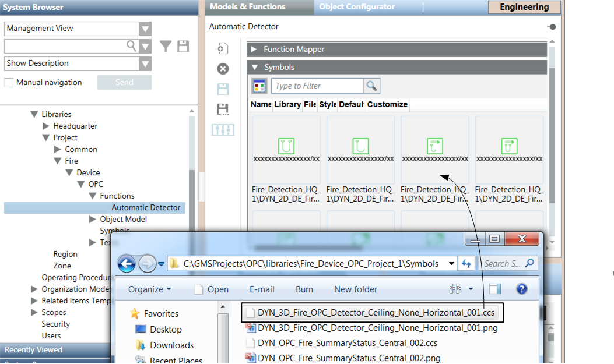
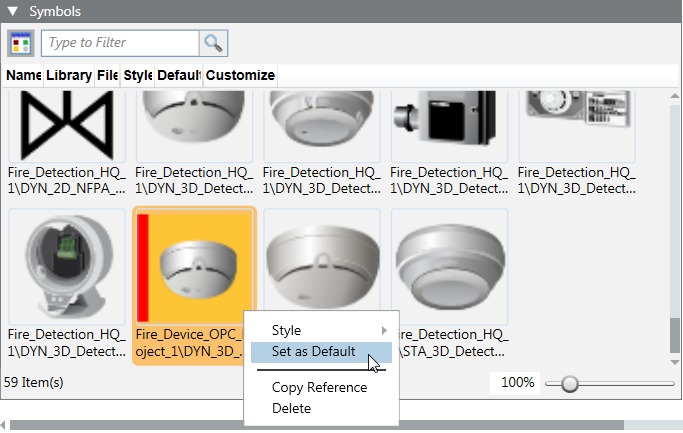

Link the Symbol to the Function
- In the customized OPC library, under Functions, select the function you want to link the symbol to (for example, Automatic Fire Detector).
- Click the Model & Functions tab.
- Open the Symbol expander.
- In Windows Explorer of the PC, open the symbol folder of the customized OPC library, for example:
GMSProjects\[Project]\libraries\Fire_Device_OPC_Project_1 - Drag the CCS file of the symbol (for example, DYN_3D_Fire_OPC_Detector_Ceiling_None_Horizontal_001.ccs) to the Symbol expander.
- The symbol displays in the Symbol expander.
- Right-click the symbol, select Style and select a graphic style (for example, 3D).
- Right-click the symbol and select Set as Default.
- Click Save
 .
.
- The new symbol is associated to all data points which use the function.

